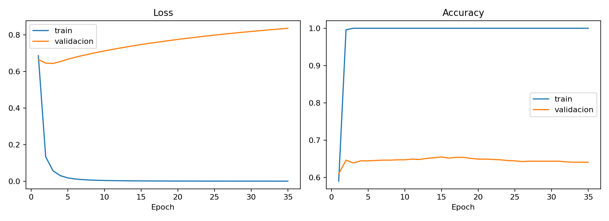
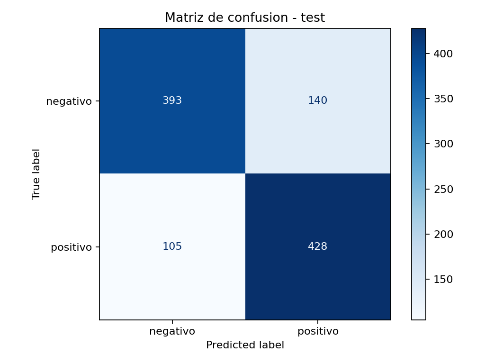
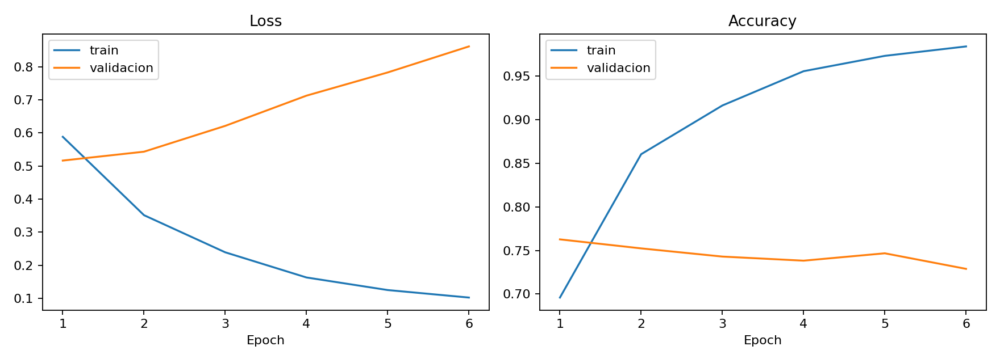

Lo que los experimentos mostraron, explicado.
Este documento recorre la evidencia generada por el entrenamiento (metricas, matriz de confusion y curvas de aprendizaje) y explica que significa cada resultado. Las secciones siguen la estructura sugerida para el informe de 5 paginas.
Clasificacion binaria de sentimiento sobre criticas de cine.
Corresponde a la pagina 1 del informe: que problema se resuelve y con que datos.
El problema es decidir si una critica de cine expresa sentimiento positivo o negativo. Se usa el dataset cornell-movie-review-data/rotten_tomatoes de Hugging Face: cada ejemplo es un texto corto con una etiqueta binaria. El dataset trae splits oficiales de entrenamiento, validacion y test, y esta balanceado entre clases, lo que simplifica la lectura de las metricas.
Texto vectorizado con TF-IDF y una MLP densa encima.
Corresponde a la pagina 2 del informe: como se representa el texto y que red lo procesa.
Representacion del texto
Una MLP densa no procesa secuencias: necesita un vector de tamano fijo. Por eso el texto se transforma con TextVectorization en modo tf_idf (5000 tokens), que pondera cada palabra por su frecuencia en el documento y su rareza en el corpus.
- El vectorizador se adapta solo con datos de entrenamiento: adaptarlo con validacion o test seria data leakage.
- La representacion ignora el orden de las palabras; es una decision deliberada para mantener la arquitectura dentro de la consigna (MLP, no redes secuenciales).
Arquitectura y entrenamiento
La red es un keras.Sequential: capas densas con activacion ReLU y una salida sigmoide que devuelve la probabilidad de clase positiva, entrenada con binary_crossentropy y Adam.
- La probabilidad se convierte en clase con un umbral de 0.5.
- Los experimentos comparan hiperparametros usando validacion; el test se reserva para una unica evaluacion final.
- Todos los experimentos (salvo la demo de overfitting) usan early stopping que restaura los mejores pesos segun validacion.
Una red sobredimensionada memoriza en vez de aprender.
Corresponde a la pagina 3 del informe: la simulacion intencional de sobreajuste pedida por la consigna.

Como leer estas curvas
- La accuracy de train llega a 1.0 en unas 3 epocas: la red memorizo los 500 ejemplos.
- El loss de train cae practicamente a 0 y se queda ahi.
- El loss de validacion baja apenas al inicio (~0.64) y despues sube sostenido hasta ~0.84: cada epoca extra empeora la generalizacion.
- La accuracy de validacion queda estancada en ~0.64.
La brecha entre train (1.0) y validacion (~0.64) es la definicion visual de overfitting: el modelo no aprendio el problema, aprendio el dataset. La receta que lo provoca es predecible: mucha capacidad, pocos datos, muchas epocas y ninguna regularizacion.
Cada experimento cambia una variable y pone a prueba una hipotesis.
Corresponde a la pagina 4 del informe. Los modelos se comparan por F1 de validacion; los numeros provienen de results/metrics.csv (corrida con semilla fija, 2026-06-10).
| Experimento | Configuracion distintiva | Epocas corridas | val_f1 | test_f1 | test_acc |
|---|---|---|---|---|---|
e3_regularized |
128 neuronas + dropout 0.5 + L2 1e-4 | 6 de 12 | 0.7647 | 0.7775 | 0.7702 |
e0_baseline |
32 neuronas | 6 de 12 | 0.7525 | 0.7662 | 0.7589 |
e1_more_capacity |
128 neuronas | 6 de 12 | 0.7447 | 0.7656 | 0.7570 |
e2_lower_learning_rate |
learning rate 1e-4 (resto igual al baseline) | 12 de 12 | 0.7405 | 0.7584 | 0.7645 |
e4_overfitting_demo |
512 neuronas, 500 ejemplos, sin early stopping | 35 de 35 | 0.6127 | 0.6465 | 0.6604 |
Cuadruplicar las neuronas (32 a 128) bajo el val_f1 de 0.7525 a 0.7447. Sobre una entrada TF-IDF de 5000 dimensiones, los parametros extra se usan antes para memorizar patrones especificos del train que para generalizar mejor. Este resultado es el que motiva el experimento de regularizacion.
Bajar el learning rate de 1e-3 a 1e-4 hizo el entrenamiento mas suave: fue el unico experimento que agoto las 12 epocas sin que el early stopping cortara. Pero no gano en validacion (0.7405). La leccion metodologica: los cambios "prudentes" tambien se validan empiricamente, no se asumen.
Con la misma red de 128 neuronas que e1, agregar dropout 0.5 y L2 1e-4 subio el val_f1 de 0.7447 a 0.7647, el mejor del lote. Es la comparacion mas valiosa del TP: capacidad sin control empeora; capacidad regularizada gana. La mejora no es magia, es la respuesta directa a lo que mostraron las curvas de e1.
e0, e1 y e3 frenaron todos en la epoca 6; con patience 5, eso significa que su mejor val_loss fue la epoca 1. Con TF-IDF de alta dimension, hasta una MLP moderada tiene capacidad de sobra para este dataset y empieza a memorizar casi de inmediato. Las metricas finales son buenas porque el early stopping restaura los pesos del mejor momento de validacion: el modelo "bueno" es el modelo detenido a tiempo.
El mejor modelo, evaluado una sola vez en test.
Corresponde a la pagina 5 del informe: matriz de confusion, metricas finales y eleccion de la metrica principal.

Lectura de la matriz
- Aciertos: 393 negativos y 428 positivos (accuracy 0.7702).
- Falsos positivos: 140 criticas negativas marcadas como positivas (el 26% de los negativos).
- Falsos negativos: 105 criticas positivas que se perdieron.
- Precision positiva 0.7535, recall positivo 0.8030, F1 0.7775.
El patron de errores muestra un modelo levemente "optimista": recupera el 80% de las criticas positivas a costa de aceptar mas falsos positivos. El recall supera a la precision en unos 5 puntos; ese desbalance es invisible si solo se mira accuracy.

Por que F1 como metrica principal
El dataset esta balanceado, asi que accuracy (0.7702) es una referencia honesta. Aun asi se elige F1 porque resume en un solo numero el compromiso entre precision y recall, y obliga a discutir los dos tipos de error que la matriz hace visibles. Con clases balanceadas, F1 y accuracy cuentan historias parecidas (0.7775 vs 0.7702); la diferencia es que F1 expone la asimetria precision/recall que accuracy esconde.
Senal de buena metodologia: el F1 de validacion (0.7647) y el de test (0.7775) son casi iguales. La seleccion por validacion no sobreestimo el rendimiento real del modelo.
Que queda honestamente afuera.
Material para el cierre del informe: limitaciones reconocidas y posibles mejoras futuras.
El objetivo se cumplio: entender el proceso, no maximizar el numero.
El TP demuestra el ciclo completo: representar texto para una MLP, comparar hiperparametros con validacion, reconocer y provocar sobreajuste, y leer el resultado final con una matriz de confusion. Las limitaciones que conviene declarar:
- Umbral fijo en 0.5: no se exploro ajustarlo para mover el balance precision/recall.
- TF-IDF ignora orden y contexto de las palabras; es un baseline razonable, no el techo del problema.
- Sin validacion cruzada: un solo split de validacion, mitigado por usar los splits oficiales del dataset.
- No se analizaron individualmente los ejemplos mal clasificados.
Declararlas no debilita el informe: muestra que se sabe donde termina lo que se midio.